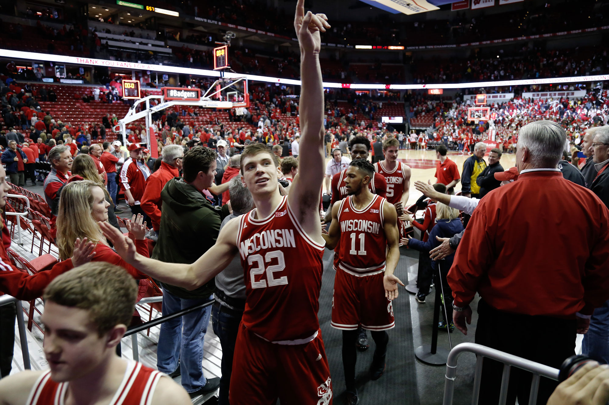
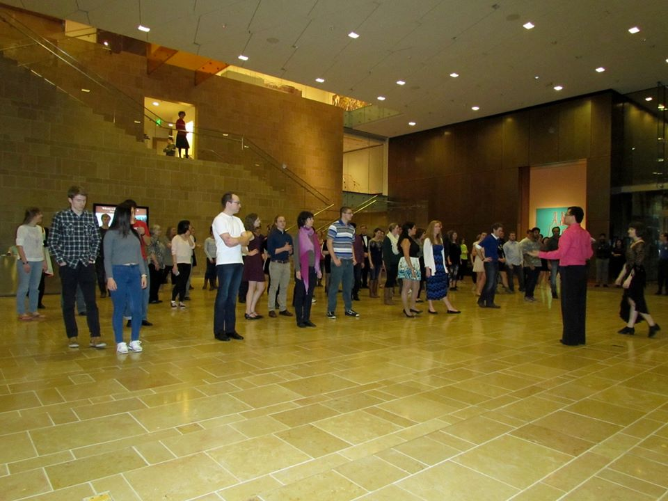

NEWS
-

Legendery Badger Basketball Team Going to NCAA Finals for 10th Time in a Row
-
UW Alumni Successfully Lived on Mars for 2 Years
-
New Policy: Students Allowed to Bring Pets to Classes
FEATURED
-

Legendery Badger Ballroom Dance Club Hosted Their First Work Shop
Chen || April.1st.2016
Badger Ballroom Dance Club has been holding workshops since three years ago, however they held the first workshop in University of Wisconsin-Madison on last Saturday, which atrracted a lot of students.Professor Smith was the guest teacher and dancer. He is good at swing, waltz and runba. He taught students how to dance a quick swing, originated in German.